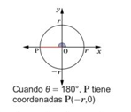

Se traza el lado terminal OP, con OP=r, para cada uno de los ángulos 0°, 90° y 180° en el plano cartesiano, como sigue:

En todos los casos, los lados terminales quedan sobre los ejes de coordenadas, a estos ángulos se les llama cuadrantales. Se sustituyen los valores correspondientes para θ, x, y y r en senθ = y/r, cosθ = x/r y tanθ = y/x, se puede completar la tabla así:

Funciones trigonométricas en ángulos notables
Complete la siguiente tabla con los valores de seno, coseno y tangente para los ángulos 0°, 90° y 180°:
| θ | 0° | 90° | 180° |
|---|---|---|---|
| sen θ | sen0° = 0/r = 0 | sen90° = r/r = 1 | sen180° = 0/r = 0 |
| cos θ | 1 | 0 | -1 |
| tan θ | 0 | Indefinido | 0 |